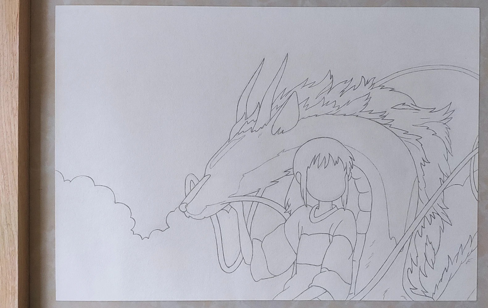
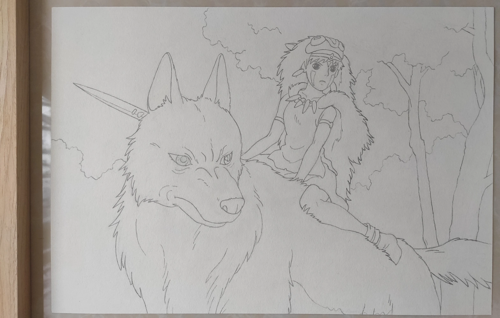
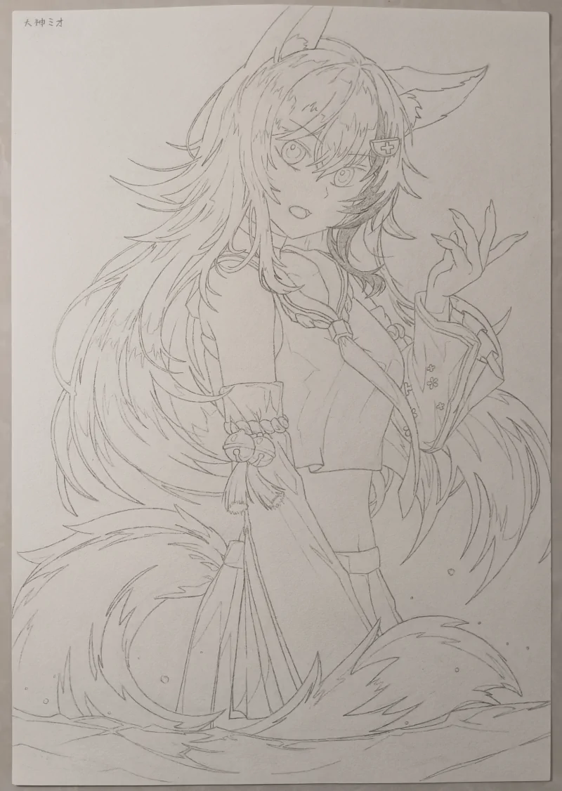

STUDIO !!!
我是 Dragoft.
我很喜欢画画，但是只会一些基础操作，目前只能完成铅笔稿。
没事的时候，我就临摹一些自己喜欢的图片。
虽然现在我的技术并不太好，但我相信通过我不断地努力，我会越画越好的 !!!
这里是一些令我满意的作品，点击原图就可以查看原尺寸的图片哦。

千寻和白龙
这是我的第一幅作品！
选了幅最简单的.
感觉龙嘴短一点更可爱...
原图出处：
千と千尋の神隠し
出镜时间：
01:52:27
完成时间：
2023.8.16

幽灵公主
非常不擅长画人物...
画得不好，请多谅解！
原图出处：
もののけ姫
出镜时间：
01:26:42
完成时间：
2023.10.1
大神ミオ
最喜欢 Mio !!!
个人感觉是最有挑战性的一幅，也是目前画得最好的一幅.
不过始终感觉没有把 Mio 的脸画好...
原图画师：
LUZZI
@hololive
@泉彩
完成时间：
2024.2.24

 原图
原图
更多作品正在缓慢创作中。如果你喜欢我的作品，可以收藏这个网站哦！
下一幅作品目前暂未定稿...